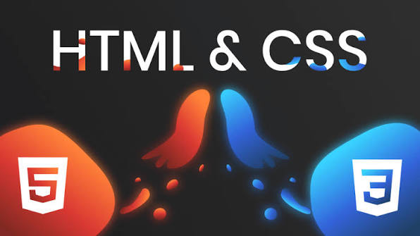

Cours CSS : mettre en forme une page
Un cours écrit pour maîtriser les styles, la mise en page et le responsive.
Objectifs pédagogiques
- Relier une feuille de style à une page HTML.
- Utiliser les sélecteurs et comprendre le modèle de boîte.
- Construire une mise en page avec Flexbox et Grid.
- Adapter l'affichage aux petits écrans avec les media queries.
1. Qu'est-ce que CSS ?
CSS (Cascading Style Sheets) décrit l'apparence d'une page : couleurs, polices, espacements et disposition. On le relie à une page HTML dans le head :
<link rel="stylesheet" href="style.css">
2. Les sélecteurs
Un sélecteur indique quels éléments recevront les styles :
/* Tous les paragraphes */
p { color: #1E1B5C; }
/* Les éléments de classe "card" */
.card { border-radius: 10px; }
/* L'élément d'identifiant "menu" */
#menu { background-color: #F5F7FF; }
/* Effet au survol */
.btn-voir:hover { background-color: #FFB020; }3. Le modèle de boîte
Chaque élément est une boîte composée, de l'intérieur vers l'extérieur, du contenu, du padding (marge intérieure), de la bordure border et du margin (marge extérieure).
.card {
box-sizing: border-box;
padding: 12px;
border: 1px solid #ccc;
margin: 10px;
}4. Flexbox et Grid
4.1 Flexbox : aligner en une dimension
.navbar {
display: flex;
align-items: center;
}4.2 Grid : organiser en deux dimensions
La grille ci-dessous crée autant de colonnes de 220 px minimum que la largeur de l'écran le permet :
.main {
display: grid;
gap: 10px;
grid-template-columns: repeat(auto-fill, minmax(220px, 1fr));
}5. Le responsive design
Les media queries appliquent des règles seulement à partir ou jusqu'à une certaine largeur d'écran :
@media (max-width: 768px) {
body { grid-template-columns: 1fr; }
}Résumé
- CSS gère l'apparence ; on le relie avec
link. - Les sélecteurs ciblent les éléments (balise, classe, identifiant).
- Le modèle de boîte : contenu, padding, border, margin.
- Flexbox pour une ligne ou une colonne, Grid pour une grille.
- Les media queries adaptent le design aux écrans.